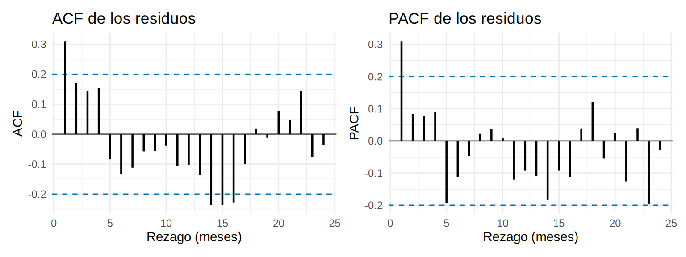
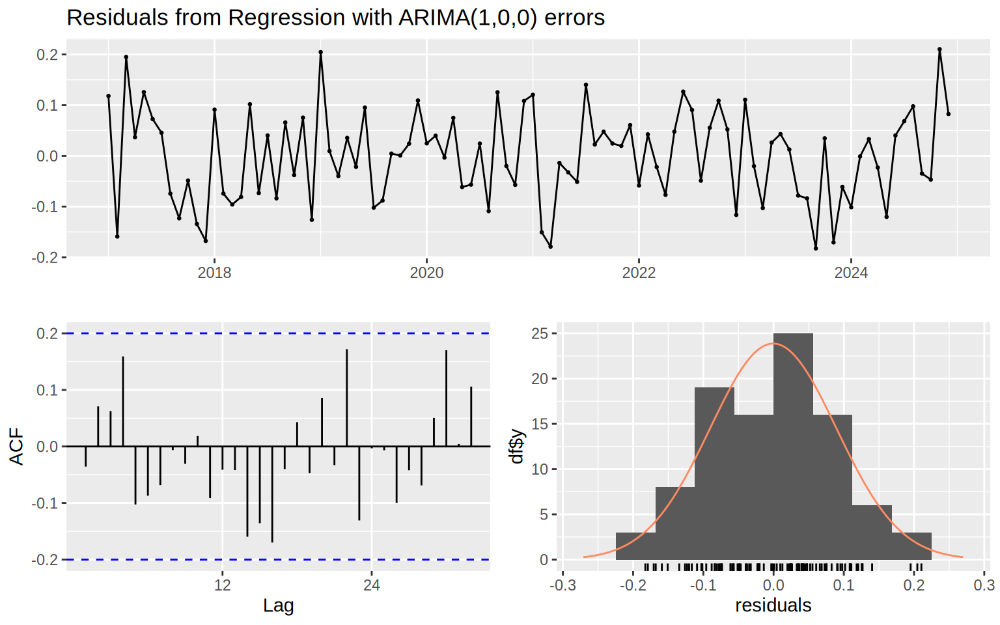
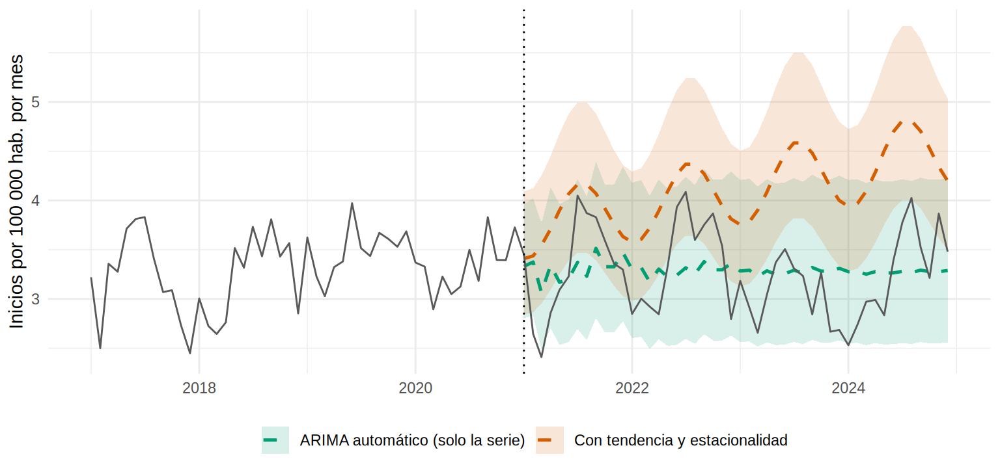

library(tidyverse)
library(sandwich)
library(lmtest)
library(forecast)
library(patchwork)
source("R/funciones_extra_cap15.R")
serie <- read_csv("Bases/serie_inicio_dialisis.csv", show_col_types = FALSE)
oraculo <- read_csv("Bases/serie_inicio_dialisis_oraculo.csv", show_col_types = FALSE) # la verdad (datos simulados)
its <- serie |> filter(region == "Intervenida") |> preparar_serie()
control <- serie |> filter(region == "Control") |> preparar_serie()
# El modelo ITS del subcapítulo 15.3
m_its <- glm(casos ~ tiempo + s1 + c1 + ola_covid + post + t_post + offset(log(poblacion)),
family = quasipoisson, data = its)Autocorrelación y estacionalidad: errores HAC y modelos ARIMA
Nota🩺 Escenario
Presentas el resultado del programa de detección temprana en la sesión del servicio. Una colega de bioestadística levanta la mano: «Los meses de una serie no son independientes: un mes alto suele ir seguido de otro mes alto. Tus intervalos de confianza asumen lo contrario y son demasiado optimistas. ¿Cuánto cambia tu conclusión si lo corriges?». Es una buena pregunta, y tiene respuesta.
Lo que vamos a hacer
- Diagnosticar la autocorrelación del modelo ITS (ACF, PACF, Ljung-Box, Durbin-Watson).
- Corregir la incertidumbre de dos maneras: errores HAC (Newey-West) y errores ARIMA.
- Construir el contrafactual y pronosticar con ARIMA, y evaluar un pronóstico contra datos que el modelo no vio.
Paso 1. Diagnóstico: ¿hay memoria en los residuos?
La autocorrelación es la correlación de una serie consigo misma desplazada \(k\) meses (el rezago). Si el modelo capturó toda la estructura, sus residuos deberían ser ruido blanco: cada mes independiente del anterior. Dos gráficos lo muestran:
- ACF (función de autocorrelación): la correlación del residuo con el residuo \(k\) meses antes.
- PACF (autocorrelación parcial): lo mismo, pero quitando el efecto de los rezagos intermedios (la correlación “directa” entre \(t\) y \(t-k\)).
Las líneas punteadas marcan lo que se esperaría por azar si no hubiera autocorrelación.
r <- residuals(m_its, type = "pearson") # residuos de Pearson del modelo ITS de 15.3
ggacf(r, lag_max = 24, titulo = "ACF de los residuos") +
ggacf(r, lag_max = 24, parcial = TRUE, titulo = "PACF de los residuos")
Box.test(r, lag = 12, type = "Ljung-Box") # H0: no hay autocorrelación hasta el rezago 12
Box-Ljung test
data: r
X-squared = 24.107, df = 12, p-value = 0.01967# Durbin-Watson y Breusch-Godfrey se aplican a modelos lineales: usamos el equivalente gaussiano (log de la tasa)
ols <- lm(ltasa ~ tiempo + s1 + c1 + ola_covid + post + t_post, data = its)
dwtest(ols) # H0: no hay autocorrelación de orden 1
Durbin-Watson test
data: ols
DW = 1.3382, p-value = 4.183e-05
alternative hypothesis: true autocorrelation is greater than 0Qué vemos. La autocorrelación de orden 1 es de 0.31 (la primera barra de la ACF sobrepasa la banda) y las siguientes decaen poco a poco; en la PACF solo destaca el primer rezago. Es el patrón típico de un proceso AR(1): el mes de hoy se parece al de ayer. (Una barra suelta por fuera de la banda en rezagos lejanos es esperable por azar: con 24 barras y una banda del 95 %, alguna sale sin que signifique nada.) Las pruebas coinciden: Ljung-Box da p = 0.020 y Durbin-Watson, p < 0.001 (un DW de 1.34; ≈ 2 significa sin autocorrelación y < 2, autocorrelación positiva).
¿Cuánto importa? Con una autocorrelación positiva \(\rho\), los 96 meses aportan menos información que 96 observaciones independientes. Una regla para un AR(1) es \(n_{\text{efectivo}} \approx n\,(1-\rho)/(1+\rho)\):
rho <- acf(r, plot = FALSE)$acf[2]
round(96 * (1 - rho) / (1 + rho)) # "meses independientes" equivalentes[1] 51Es como si tuviéramos unos 51 meses independientes en vez de 96. Un modelo que ignora esto presume más precisión de la que hay.
Paso 2. Remedio 1: errores estándar HAC (Newey-West)
Los coeficientes del modelo de 15.3 siguen siendo buenos (el estimador es consistente); lo que está mal son sus errores estándar. Los errores HAC (heteroskedasticity and autocorrelation consistent, de Newey y West) los recalculan permitiendo que los residuos se correlacionen hasta un cierto número de rezagos. Se piden con sandwich::NeweyWest() y se usan en lmtest::coeftest():
V_hac <- NeweyWest(m_its, lag = 6, prewhite = FALSE) # permite correlación hasta 6 meses
coeftest(m_its, vcov = V_hac)[c("post", "t_post"), ] |> round(4) Estimate Std. Error z value Pr(>|z|)
post -0.1046 0.0468 -2.2374 0.0253
t_post -0.0040 0.0023 -1.7489 0.0803La elección del número de rezagos importa un poco. Comparamos el error estándar clásico con el HAC para distintos rezagos:
# Para cada número de rezagos: error estándar y valor p de la pendiente (t_post)
hac_pend <- function(l) {
ct <- coeftest(m_its, vcov = NeweyWest(m_its, lag = l, prewhite = FALSE))["t_post", ]
c(ee = unname(ct[2]), p = unname(ct[4]))
}
ct0 <- coeftest(m_its)["t_post", ]
tabla_ee <- tibble(`Error estándar` = c("Clásico", "HAC, 3 rezagos", "HAC, 6 rezagos", "HAC, 12 rezagos"),
ee_nivel = c(sqrt(vcov(m_its)["post", "post"]), sapply(c(3, 6, 12), \(l) sqrt(NeweyWest(m_its, lag = l, prewhite = FALSE)["post", "post"]))),
ee_pendiente = c(unname(ct0[2]), sapply(c(3, 6, 12), \(l) hac_pend(l)["ee"])),
p_pendiente = c(unname(ct0[4]), sapply(c(3, 6, 12), \(l) hac_pend(l)["p"])))
tabla_ee |> mutate(across(where(is.numeric), \(x) round(x, 4)))# A tibble: 4 × 4
`Error estándar` ee_nivel ee_pendiente p_pendiente
<chr> <dbl> <dbl> <dbl>
1 Clásico 0.0479 0.0016 0.0134
2 HAC, 3 rezagos 0.0497 0.0022 0.0737
3 HAC, 6 rezagos 0.0468 0.0023 0.0803
4 HAC, 12 rezagos 0.037 0.002 0.0496Qué vemos. El error estándar de la pendiente pasa de 0.0016 a 0.0023 con 6 rezagos (un 41 % más), y el del nivel apenas cambia. Con el HAC, el valor p del cambio de pendiente (RR 0.9960 por mes) pasa de 0.013 a un rango de 0.05 a 0.08 según los rezagos: queda en el límite de la significación. La conclusión cualitativa se debilita, y con razón: el modelo ingenuo era demasiado optimista. No hay una regla única para los rezagos; lo sensato es mostrar que la conclusión no depende de esa elección y reportar el HAC como análisis principal o de sensibilidad.
Tip💡 Qué corrige y qué no corrige el HAC
El HAC no cambia los coeficientes, solo la incertidumbre. Es la corrección más simple (un paso extra al modelo que ya tienes) y funciona con cualquier glm. Si quieres además modelar la memoria de la serie (para pronosticar, o para ganar precisión) necesitas un modelo ARIMA.
Paso 3. Remedio 2: modelar la autocorrelación con ARIMA
Un modelo ARIMA describe cada mes como función de meses anteriores. Su nombre resume sus piezas, \(\text{ARIMA}(p,d,q)\):
- AR(p) (autorregresivo): hoy depende de los \(p\) meses anteriores. ACF que decae poco a poco y PACF que se corta después del rezago \(p\).
- MA(q) (media móvil): hoy depende de los errores de los \(q\) meses previos. ACF que se corta tras el rezago \(q\) y PACF que decae.
- I(d) (integrado): cuántas veces se diferencia la serie (restar el mes anterior) para volverla estacionaria, es decir, con media y varianza constantes y autocorrelación que solo depende del rezago.
- Con estacionalidad se añade un bloque \((P,D,Q)_{12}\) que hace lo mismo con rezagos de 12, 24, 36 meses: SARIMA.
Hay dos filosofías para una serie con tendencia y estacionalidad: (1) modelarlas directamente con regresión (tiempo, armónicos) y dejar que ARIMA modele solo los errores; (2) diferenciar la serie para eliminarlas. Empezamos por la primera, que es la que usamos en 15.3 y mantiene interpretables los coeficientes del programa. Como ARIMA supone un resultado continuo, trabajamos con el logaritmo de la tasa (los coeficientes siguen siendo log-razones de tasas; con tasas de 2.5 a 4 por 100 000 la aproximación gaussiana es razonable):
y <- ts(its$ltasa, start = c(2017, 1), frequency = 12)
X <- as.matrix(its[, c("tiempo", "s1", "c1", "ola_covid", "post", "t_post")]) # las mismas covariables de 15.3
a_reg <- auto.arima(y, xreg = X, seasonal = FALSE, stepwise = FALSE, approximation = FALSE)
# seasonal = FALSE: la estacionalidad ya está en s1 y c1 (armónicos)
# stepwise = FALSE y approximation = FALSE: búsqueda exhaustiva (con 96 datos es rápida)
a_regSeries: y
Regression with ARIMA(1,0,0) errors
Coefficients:
ar1 intercept tiempo s1 c1 ola_covid post t_post
0.3230 1.1421 0.0030 -0.0938 -0.0587 -0.1158 -0.0999 -0.0036
s.e. 0.0993 0.0385 0.0016 0.0179 0.0179 0.0555 0.0590 0.0021
sigma^2 = 0.008764: log likelihood = 95.28
AIC=-172.56 AICc=-170.47 BIC=-149.48auto.arima() elige el orden \((p,d,q)\) por AICc. Eligió ARIMA(1,0,0): un AR(1) con \(\phi\) = 0.32, justo la autocorrelación que vimos. El modelo debe dejar residuos sin memoria; checkresiduals() lo comprueba (gráfico de residuos, ACF y la prueba de Ljung-Box):
checkresiduals(a_reg)
Ljung-Box test
data: Residuals from Regression with ARIMA(1,0,0) errors
Q* = 16.578, df = 18, p-value = 0.5522
Model df: 1. Total lags used: 19Qué vemos. Los residuos ya no tienen autocorrelación (Ljung-Box p = 0.55). Ahora comparamos las cuatro maneras de estimar el efecto del programa, con la verdad al final. La cuarta es el enfoque clásico de diferencias (Box-Jenkins, el del taller del autor): se diferencia la serie una vez ordinaria y una vez estacional y se agregan el escalón (post) y la rampa (t_post) como regresoras:
# Enfoque de diferencias (SARIMA) con el escalón y la rampa
a_dif <- Arima(y, order = c(0, 1, 1), seasonal = c(0, 1, 1), xreg = X[, c("ola_covid", "post", "t_post")])
extraer <- function(coefs, ee) tibble(nivel = coefs[1], ee_nivel = ee[1], pendiente = coefs[2], ee_pendiente = ee[2])
comparacion <- bind_rows(
`quasi-Poisson, EE clásico` = extraer(coef(m_its)[c("post", "t_post")], sqrt(diag(vcov(m_its)))[c("post", "t_post")]),
`quasi-Poisson, EE HAC (6)` = extraer(coef(m_its)[c("post", "t_post")], sqrt(diag(V_hac))[c("post", "t_post")]),
`Regresión con errores ARIMA` = extraer(coef(a_reg)[c("post", "t_post")], sqrt(diag(vcov(a_reg)))[c("post", "t_post")]),
`SARIMA con diferencias` = extraer(coef(a_dif)[c("post", "t_post")], sqrt(diag(vcov(a_dif)))[c("post", "t_post")]),
`VERDAD (simulada)` = extraer(c(-0.10, -0.005), c(NA, NA)),
.id = "metodo")
comparacion |> mutate(across(where(is.numeric), \(x) round(x, 4)))# A tibble: 5 × 5
metodo nivel ee_nivel pendiente ee_pendiente
<chr> <dbl> <dbl> <dbl> <dbl>
1 quasi-Poisson, EE clásico -0.105 0.0479 -0.004 0.0016
2 quasi-Poisson, EE HAC (6) -0.105 0.0468 -0.004 0.0023
3 Regresión con errores ARIMA -0.0999 0.059 -0.0036 0.0021
4 SARIMA con diferencias -0.175 0.084 -0.0004 0.0076
5 VERDAD (simulada) -0.1 NA -0.005 NA - Las tres primeras filas dan estimaciones del mismo orden (nivel entre −0.10 y −0.11; pendiente alrededor de −0.004): el programa, con cualquiera de ellas, reduce el inicio de diálisis.
- Los errores estándar sí cambian: el HAC y el ARIMA son mayores que el clásico, sobre todo para la pendiente (0.0016 frente a 0.0023 y 0.0021).
- El SARIMA con diferencias estima el nivel en -0.17 y la pendiente en -0.0004, con errores estándar mucho mayores. Diferenciar quita la tendencia y la estacionalidad gastando datos (se pierden 13 meses y el efecto queda más difuso). Es útil cuando la tendencia es estocástica (vaga, sin forma fija); aquí es determinista y conocemos su forma, y la regresión armónica es más eficiente.
Advertencia⚠️
auto.arima() no piensa por ti
auto.arima() elige el orden del ARIMA, pero no decide la estructura del problema: no sabe si tu serie tiene una ola de COVID, una política o un cambio en el registro. Si le pasas la serie sola, sin xreg, ajusta lo que ve, y el resultado puede engañar (lo mostramos en el Paso 4). Y diferenciar de más (sobrediferenciar) añade ruido y esconde efectos. Revisa siempre los residuos y que el modelo tenga sentido clínico.
Paso 4. El contrafactual con ARIMA
Con ARIMA, el contrafactual es un pronóstico: ajustas el modelo solo con los datos previos al programa y pronosticas los 48 meses siguientes. La diferencia entre lo observado y el pronóstico es el efecto. Pedimos la estructura completa (tendencia, estacionalidad y la ola COVID, que no se repite en el futuro) y la comparamos con un ARIMA “automático” que solo ve la serie:
pre <- 1:48; post <- 49:96
X_pre <- X[pre, c("tiempo", "s1", "c1", "ola_covid")]
X_fut <- X[post, c("tiempo", "s1", "c1", "ola_covid")]; X_fut[, "ola_covid"] <- 0 # sin ola COVID en el futuro
# (a) Con estructura: tendencia + armónicos + COVID, errores ARIMA
a_pre <- auto.arima(y[pre], xreg = X_pre, seasonal = FALSE, stepwise = FALSE, approximation = FALSE)
fc_a <- forecast(a_pre, h = 48, xreg = X_fut, level = 95)
# (b) ARIMA "automático" que solo mira la serie previa
a_auto <- auto.arima(ts(y[pre], start = c(2017, 1), frequency = 12), stepwise = FALSE, approximation = FALSE)
fc_b <- forecast(a_auto, h = 48, level = 95)
pob <- its$poblacion[post]
cf_a <- exp(fc_a$mean) / 1e5 * pob
cf_b <- exp(fc_b$mean) / 1e5 * pob
verdad_cf <- sum(filter(oraculo, region == "Intervenida", mes_num >= 49)$mu_contrafactual)
c(observados = sum(its$casos[post]), cf_con_estructura = sum(cf_a), cf_arima_automatico = sum(cf_b), verdad_cf = verdad_cf) |> round() observados cf_con_estructura cf_arima_automatico verdad_cf
8047 10154 8129 9918 graf <- bind_rows(
tibble(fecha = its$fecha[post], metodo = "Con tendencia y estacionalidad", tasa = exp(fc_a$mean),
inf = exp(fc_a$lower[, 1]), sup = exp(fc_a$upper[, 1])),
tibble(fecha = its$fecha[post], metodo = "ARIMA automático (solo la serie)", tasa = exp(fc_b$mean),
inf = exp(fc_b$lower[, 1]), sup = exp(fc_b$upper[, 1])))
ggplot() +
geom_ribbon(data = graf, aes(fecha, ymin = inf, ymax = sup, fill = metodo), alpha = 0.15) +
geom_line(data = graf, aes(fecha, tasa, colour = metodo), linewidth = 0.9, linetype = "dashed") +
geom_line(data = its, aes(fecha, tasa), colour = "grey35") +
geom_vline(xintercept = as.Date("2021-01-01"), linetype = "dotted") +
scale_colour_manual(values = c("Con tendencia y estacionalidad" = "#D55E00", "ARIMA automático (solo la serie)" = "#009E73"), name = NULL) +
scale_fill_manual(values = c("Con tendencia y estacionalidad" = "#D55E00", "ARIMA automático (solo la serie)" = "#009E73"), name = NULL) +
labs(x = NULL, y = "Inicios por 100 000 hab. por mes") +
theme_minimal(base_size = 11) + theme(legend.position = "bottom")
Qué vemos. El pronóstico con estructura (naranja) predice un contrafactual de 10154 casos en los 48 meses, es decir, 2107 casos evitados; la verdad es 9918 de contrafactual y 1955 evitados (el IC de predicción de cada mes es amplio, ver la banda). El ARIMA automático (verde) ve la serie sin tendencia ni onda y pronostica una línea plana: su contrafactual (8129) casi coincide con los 8047 observados y concluiría que el programa no hizo nada. Dos modelos “correctos” estadísticamente, dos conclusiones opuestas: el contrafactual depende de la estructura que le das al modelo, y esa estructura sale del conocimiento clínico, no de un algoritmo. Además, los intervalos de predicción se ensanchan con el horizonte: proyectar 4 años es muy incierto.
Paso 5. Pronosticar y evaluar como en Forecasting: Principles and Practice
Pronosticar es otra tarea: aquí no buscamos un efecto causal sino anticipar (cupos del próximo año). La regla de oro del libro de Hyndman y Athanasopoulos es evaluar con datos que el modelo no vio: se separa el final de la serie como conjunto de prueba, se ajusta con el resto (entrenamiento) y se compara el pronóstico con lo que pasó. Usamos la región Control (sin intervención): entrenamos con 2017-2023 y pronosticamos 2024.
yc <- ts(control$tasa, start = c(2017, 1), frequency = 12)
entren <- window(yc, end = c(2023, 12)); prueba <- window(yc, start = c(2024, 1))
# Cuatro competidores
f_ingenuo <- snaive(entren, h = 12) # repetir el mismo mes del año anterior
f_ets <- forecast(ets(entren), h = 12) # suavizado exponencial automático
f_arima <- forecast(auto.arima(entren, stepwise = FALSE, approximation = FALSE), h = 12) # ARIMA automático
Xc <- as.matrix(control[, c("tiempo", "s1", "c1", "ola_covid")])
Xc_fut <- Xc[85:96, ]; Xc_fut[, "ola_covid"] <- 0
a_dhr <- auto.arima(log(entren), xreg = Xc[1:84, ], seasonal = FALSE, stepwise = FALSE, approximation = FALSE)
f_dhr <- exp(forecast(a_dhr, h = 12, xreg = Xc_fut)$mean) # regresión con tendencia y estacionalidad
bind_rows(
`Estacional ingenuo` = exactitud(f_ingenuo$mean, prueba, entren),
`ETS (automático)` = exactitud(f_ets$mean, prueba, entren),
`ARIMA (automático)` = exactitud(f_arima$mean, prueba, entren),
`Regresión: tendencia + armónicos + COVID` = exactitud(f_dhr, prueba, entren),
.id = "modelo") |> mutate(across(where(is.numeric), \(x) round(x, 2)))# A tibble: 4 × 5
modelo RMSE MAE MAPE MASE
<chr> <dbl> <dbl> <dbl> <dbl>
1 Estacional ingenuo 0.65 0.55 13.2 1.55
2 ETS (automático) 0.52 0.38 8.77 1.07
3 ARIMA (automático) 0.57 0.44 10.3 1.24
4 Regresión: tendencia + armónicos + COVID 0.42 0.3 7.1 0.85Las medidas, en las unidades de la tasa (por 100 000 por mes), salvo MAPE (% de error) y MASE (adimensional):
- RMSE y MAE: el error típico (el RMSE castiga más los errores grandes).
- MAPE: error porcentual medio.
- MASE: error del modelo relativo al de repetir el mismo mes del año pasado (calculado en el entrenamiento). Menos de 1 = mejor que ese pronóstico ingenuo.
Qué vemos. El pronóstico que codifica lo que sabemos (tendencia, estacionalidad, y que la ola COVID no vuelve) es el mejor en todas las medidas (MASE de 0.85); los métodos automáticos que solo miran la serie quedan por detrás, y el ingenuo estacional es el peor de los cuatro (MASE de 1.55). La regresión gana en parte porque la simulación sigue justo esa estructura; en datos reales la ventaja suele ser menor, pero la lección se mantiene: empieza por un modelo ingenuo y exige que los demás lo superen. Con un año de prueba y 12 pronósticos, no conviene sacar conclusiones tajantes (el azar de un año pesa); la forma más robusta es la validación cruzada de series de tiempo, con orígenes sucesivos (tsCV()):
## Validación cruzada de series de tiempo (no se ejecuta aquí): origen móvil, pronóstico a 1 mes
# fc_ets <- function(x, h) forecast(ets(x), h = h)
# e_ets <- tsCV(yc, forecastfunction = fc_ets, h = 1, initial = 48) # empieza con 48 meses de entrenamiento
# sqrt(mean(e_ets^2, na.rm = TRUE)) # RMSE a 1 mes
Tip💡 La misma regresión con errores ARIMA con
fable (familia tsibble)
El enfoque de Forecasting: Principles and Practice usa los paquetes tsibble y fable (sucesores de forecast). Código no verificado en el entorno de pruebas del libro; las versiones con forecast de arriba son las que se ejecutan aquí.
library(tsibble)
library(fable)
its_ts <- its |> mutate(mes_ts = yearmonth(fecha)) |> as_tsibble(index = mes_ts)
ajuste <- its_ts |>
model(arima = ARIMA(ltasa ~ tiempo + s1 + c1 + ola_covid + post + t_post + PDQ(0, 0, 0))) # sin parte estacional (usa s1 y c1)
report(ajuste) # coeficientes y orden elegido
gg_tsresiduals(ajuste) # diagnóstico de residuos
# Pronóstico del contrafactual: ajustar solo con los datos previos y proyectar 48 meses
# (requiere pasar new_data con las covariables futuras)
Importante🎯 En resumen
- Un modelo de conteo que ignora la autocorrelación subestima la incertidumbre. Se diagnostica con ACF/PACF, Ljung-Box y Durbin-Watson.
- Los errores HAC (
sandwich::NeweyWest()) corrigen los errores estándar sin tocar los coeficientes; muestra la sensibilidad a los rezagos. - Un ARIMA modela la memoria: AR (depende de meses previos), MA (de errores previos), I (diferenciación). La regresión con errores ARIMA conserva la interpretación del nivel y de la pendiente.
- Diferenciar quita tendencia y estacionalidad pero gasta datos; con tendencia determinista conocida, la regresión es más eficiente.
- El contrafactual con ARIMA es un pronóstico: depende de la estructura (tendencia, estacionalidad, eventos) que le des. Un ARIMA ciego puede decir “no hubo efecto”.
- Para pronosticar, evalúa con un conjunto de prueba (o
tsCV()) y compara con un modelo ingenuo; el MASE < 1 indica mejora.
Ejercicio
- Repite el diagnóstico (ACF, Ljung-Box) con los residuos del modelo ITS de la región Control (sin el programa). ¿Hay autocorrelación? ¿Qué te dice sobre usar HAC allí?
- Cambia
lag = 6porlag = 1,lag = 12ylag = 24enNeweyWest(). ¿Cómo cambia el p de la pendiente? - Ajusta
auto.arima()al contrafactual constepwise = TRUEy sinapproximation = FALSE. ¿Cambia el orden elegido y el pronóstico?